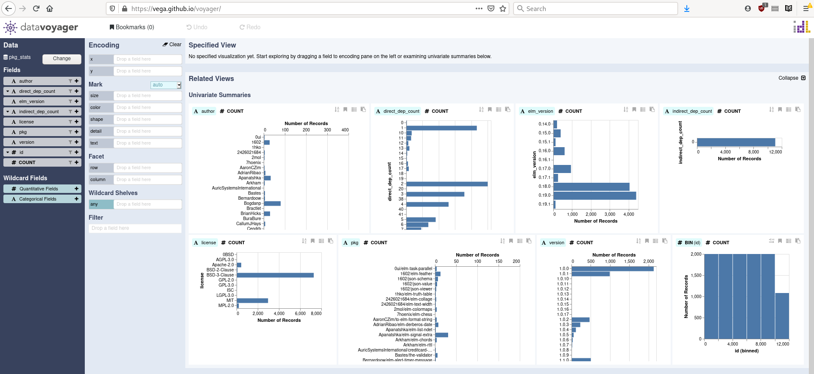
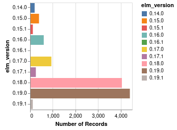
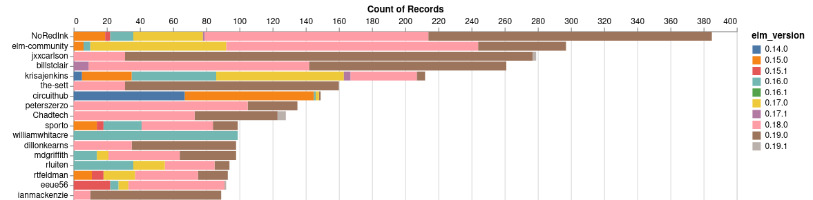
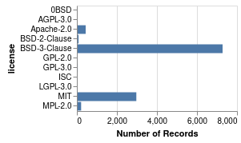
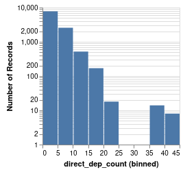
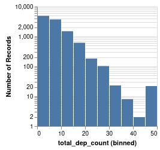

Dependency solvers are algorithms taking as input the direct dependencies of an app or a package and computing all versions of all packages that will be necessary for the code to run (including indirect dependencies).
For quite some time now I’ve been working on implementations of a state of the art dependency solver called PubGrub, originally created by Natalie Weizenbaum for the Dart programming language. I used elm to prototype my first implementation of PubGrub, which resulted in elm-pubgrub, that I presented 4 months ago. Beware that there is actually a bug in that implementation that I’ve not fixed yet (sorry).
But I have more plans for it, and to that end, I’ve reimplemented PubGrub in Rust this time! With the help of Jacob and Alex, we have improved everything from my initial draft and are working on making it a better alternative to the solver embedded in Cargo, Rust package manager.
Few days ago, I created an index, a registry of all 11079 published elm package versions (to date) between elm 0.14.0 and elm 0.19.1 with their direct dependencies, all in one file. And today, I’m proud to say that we can solve dependencies of all those 11079 package versions with pubgrub in less than 1 second! (0.842s with an i7-10750H) I’m now very confident that it will be a central piece for another project of mine, with hopefully more exciting news before Christmas!
Doing that analysis of elm packages also brought a lot of insight and some surprises. I’ll start with some statistics, followed by surprises (invalid packages in the elm registry).
Statistics on elm packages
It’s always fun to explore data and to share some insight on that data. So for this, I’ve generated CSV file containing the following fields per package version: id, author, package, version, elm-version, license, direct_dep_count, total_dep_count. Once you plug that data into a tool like vega data voyager, you can start exploring it and look for interesting patterns.

Here are some interesting plots, we can start with the number of package versions published per version of elm.
Now the most prolific authors, sorted by number of package versions published.

Here are the different licenses used in elm packages.
It is also interesting to note that most packages have a low count of direct and indirect dependencies.
 Bad surprises
While solving dependencies for all elm packages, I was surprised to see that some packages could not be solved. So I did an analysis of all those packages and sorted the failures in different categories as follows.
Packages depending on non-existing packages
Some packages mentioned in dependencies do not exist in the elm registry. I suppose they may have existed at some point and were removed for some reason. As a consequence, there are a number of existing packages in the registry depending on them which can thus not be compiled anymore. Many of them depended on maxsnew/io, not existing anymore. Those are all elm 0.15 packages:
sporto/erlfrom 1.0.0 to 3.1.0jessitron/elm-param-parsin1.0.0nphollon/collisions1.0.0 and 1.0.1avh4/elm-spec1.0.0avh4/elm-diffuntil 1.0.5chendrix/elm-matrixfrom 2.0.1 to 3.0.0aluuu/elm-check-iotruqu/elm-base641.0.0
Some depended on Dandandan/easing, these are elm 0.15 and elm 0.16 packages
KtorZ/elm-notification(elm 0.16)etaque/elm-transit-style1.0.0 and 1.0.1 (elm 0.16)etaque/elm-transit4.0.1 (elm 0.16)mgold/elm-animation1.0.0 and 1.0.1 (elm 0.15)
Also all packages from spisemisu do not appear to exist anymore in the packages registry. As a consequence, dependencies of the following elm 0.18 packages cannot be solved.
nathanjohnson320/ecurvedepends onspisemisu/elm-bytesktonon/elm-hmacdepends onspisemisu/elm-bytesarowM/elm-embedded-gist1.0.4 depends onspisemisu/elm-shabillstclair/elm-crypto-stringuntil 2.1.0 depend onspisemisu/elm-utf8
Many other packages (mostly elm 0.18) depend on non-existing ones:
imeckler/iteratoruntil 1.1.1 (elm 0.14) depends onuehaj/intrangewhich does not exist.sindikat/elm-matrix1.1.0 and 1.2.0 (elm 0.15) depend onsindikat/elm-array-experimentalwhich does not exist.rgrempel/elm-route-urluntil 1.0.4 (elm 0.15) depends onTheSeamau5/elm-historywhich does not exist.krisajenkins/elm-extsfrom 10.0.0 to 10.2.5 (elm 0.15) depends onjterbraak/dateopwhich does not exist.javcasas/elm-decimal1.0.0 (elm 0.16) depends onjavcasas/elm-integer< 2.0.0which does not exist.Warry/elmi-decoderdepends onWarry/ascii-tablewhich does not exist (warry/ascii-tableexists though)cmditch/mel-bew3depends onWarry/ascii-tablewhich does not exist.cmditch/elm-ethereum1.0.0 and 1.0.1 depend onWarry/ascii-tablewhich does not exist.ktonon/elm-serverless-cors1.0.0 and 1.0.1 indirectly depend onktonon/url-parserwhich does not existktonon/elm-serverless3.0.0 to 3.0.2 depend onktonon/url-parserwhich does not exist.danielnarey/elm-form-capturedepends ondanielnarey/elm-html-treewhich does not existsurprisetalk/elm-bulmafrom 3.0.0 to 6.0.2 depend ondanielnarey/elm-bulma-classeswhich does not existChadtech/ctpaint-keysfrom 5.0.0 to 6.0.9 depend onChadtech/keyboard-extra-browserwhich does not existjfmengels/elm-lint1.0.0 depends onjfmengels/elm-astwhich does not exist.the-sett/ai-search3.1.1 depends ontsfoster/elm-heapwhich does not exist (TSFoster/elm-heapexists though).the-sett/svg-text-fonts1.0.0 and 2.0.0 depend onthe-sett/elm-multi-dictwhich does not exist.allo-media/koivufrom 4.0.0 to 4.1.1 dependallo-media/canopy3.1.0 <= v < 4.0.0which does not exist (only 1.0.0 exist).
Packages depending on two incompatible versions of elm
Some packages depend indirectly on an older version of elm, due to a dependency to an old version of elm-lang/core. I suspect those are errors happening at the transition between two elm versions.
bakkemo/elm-collision1.0.0 is an elm 0.15 package depending onelm-lang/core1.0.0 <= v < 2.0.0which is an elm 0.14 package.eeue56/elm-flat-matrixfrom 2.0.2 to 2.0.4 are elm 0.16 packages depending onelm-lang/core2.1.0 which is an elm 0.15 package.jvoigtlaender/elm-warshall1.0.0 depends oneeue56/elm-flat-matrix2.0.4 which itself is not solvable.mbr/elm-mouse-events1.0.3 is an elm 0.18 package depending onelm-lang/core4.0.5 (elm 0.17)
And some packages are back from the future! They indirectly depend on a future version of elm. Impossible you might say! The relativity is broken! Well, not exactly. Some are elm transitions issues I guess, but one is due to packages not existing anymore. This is the one I prefer !
EngageSoftware/elm-dnn-http1.0.0 is an elm 0.18 package depending onEngageSoftware/elm-dnn-localizationwhich is an elm 0.19 package. (pselm-dnn-localizationstarts at version 1.0.2 so maybe previous versions were elm 0.18 packages, but they don’t exist anymore in the package registry)garetht/elm-dynamic-style1.0.1 is an elm 0.15 package depending onelm-lang/core3.0.0 (elm 0.16)sgraf812/elm-intdict1.4.0 and 1.4.1 are elm 0.15 packages depending onelm-lang/core3.0.0 which is an elm 0.16 package.w0rm/elm-slice-show3.0.0 is an elm 0.16 package depending onelm-lang/navigation1.0.0 which is an elm 0.17 package.vito/elm-ansi8.0.0 is an elm 0.16 package depending onelm-lang/html1.0.0 <= v < 2.0.0which is an elm 0.17 package.lattenwald/elm-base641.0.2 and 1.0.3 are elm 0.17 packages depending onelm-lang/core5.0.0 <= v < 6.0.0which is for elm 0.18.nedSaf/elm-bootstrap-grip1.0.1 and 1.0.2 are elm 0.17 packages depending onelm-lang/core5.1.1 (elm 0.18)
Indirect dependencies on two incompatible versions of the same package
Very similar than with elm itself, but this time regarding regular published packages. Some packages depend on other packages in a way that both depend on two incompatible ranges of versions of a same third packages.
fresheyeball/elm-check-runner1.0.0 depends onNoRedInk/elm-check2.0.0 <= v < 3.0.0but both depend on incompatible versions ofelm-lang/core.heyLu/elm-format-date1.0.0 depends ondeadfoxygrandpa/elm-test1.0.2 <= v < 2.0.0but both depend on incompatible versions ofelm-lang/core.nphollon/collision1.0.0 depends onelm-community/elm-list-extra2.0.0 and both have incompatible dependencies onelm-lang/core.enetsee/facet-plot-alphafrom 2.0.1 to 2.0.3 depends onenetsee/facet-scenegraph-alphaand both have incompatible dependencies onfolkertdev/svg-path-lowlevel.enetsee/facet-render-svg-alphauntil 1.0.3 depends onfolkertdev/one-true-path-experiment3.0.2 and both depend on incompatible versions offolkertdev/svg-path-lowlevel.lucamug/elm-style-framework5.0.1 depends onlucamug/elm-styleguide-generator3.0.0 <= v < 4.0.0but both depend on incompatible versions ofmdgriffith/stylish-elephants.jonathanfishbein1/elm-comment5.0.3 depends onlucamug/elm-style-framework6.0.0 and both have incompatible dependencies tomdgriffith/stylish-elephants.primait/elm-form11.0.0 and 12.0.0 depend onLeonti/elm-material-datepickerand both depend on incompatible versions ofrluiten/elm-date-extra.Natim/elm-workalendar1.0.0 and 1.0.1 are depending onakheron/elm-easterand both have incompatible dependencies tojustinmimbs/elm-date-extra.drathier/elm-graph-testuntil 1.0.2 depends onelm-community/elm-test3.1.0 but both depend on incompatible versions ofmgold/elm-random-pcgso it is an impossible transitive dependency.circuithub/elm-bootstrap-html4.0.1 and 4.0.2 indirectly depend on two incompatible versions ofevancz/elm-html
Indirect dependency on an older version of itself
I’m not sure how this one was not caught by the compiler.
jonathanfishbein1/complex-numbers5.0.0 depends onjonathanfishbein1/elm-field3.0.0 <= v < 4.0.0which depends onjonathanfishbein1/complex-numbers4.1.0 <= v < 5.0.0so there is an impossible cycle.
Packages with mistakes in dependencies
Those are package author mistakes and should have been caught at package publication.
eskimoblood/elm-wallpaper2.1.4 depends on elm version"0.17.0 <= v < 0.17.0".krisajenkins/elm-dialoguntil 1.0.2 depends onlaszlopandy/elm-console1.1.1 <= v < 1.1.1.showel/elm-data-util1.0.0 has a duplicate"elm-version"field, one with the package syntax"0.19.0 <= v < 0.20.0"and one with the application syntax"0.19.0". This made the deserializer of PubGrub solver fail.alex-tan/loadable1.0.0 has a duplicate"elm-version"field, one with the package syntax"0.19.0 <= v < 0.20.0"and one with the application syntax"0.19.0". This made the deserializer of PubGrub solver fail.
What should we do about it?
Most problematic packages are related to old versions of elm, but not all (the last two are 0.19 packages with a syntax issue in their elm.json). Maybe all problematic packages should be removed from the package registry to prevent projects from depending on them since it is still possible to create elm 0.18 projects. What do you think? (Ultimately it’s Evan’s decision anyway).